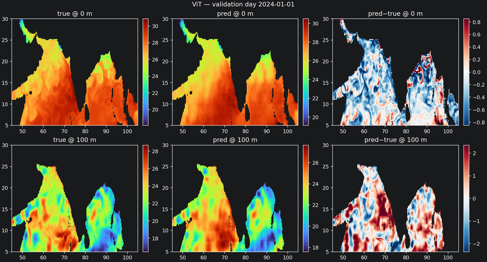

Vision Transformer
Splits each day’s surface map into patches, encodes them with a small Transformer, and decodes all 15 depth channels. Uses surface fields only — the fair SIH baseline.
- Overall val RMSE ≈ 0.64 °C
- Thermocline (100–150 m) ≈ 1.1 °C
- Notebook:
train_vit.ipynb
